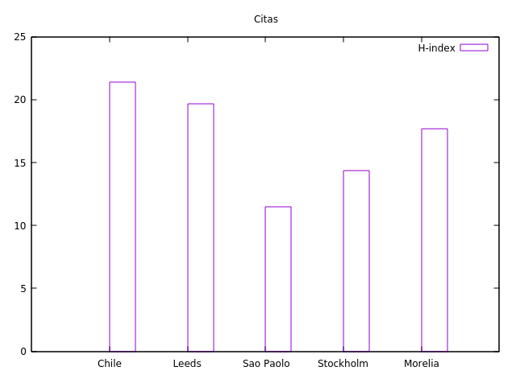

Greetings to you!
Table of Contents
1 First Level One Heading
Some random text.
1.1 First Level Two Heading
In 1956, Knuth received a scholarship to the Case Institute of Technology (now part of Case Western Reserve University) in Cleveland, Ohio. He also joined Beta Nu Chapter of the Theta Chi fraternity. While studying physics at the Case Institute of Technology, Knuth was introduced to the IBM 650, one of the early mainframes. After reading the computer’s manual, Knuth decided to rewrite the assembly and compiler code for the machine used in his school, because he believed he could do it better.
2 Second Level One Heading
Knuth was one of the founding editors of Case Institute’s Engineering and Science Review, which won a national award as best technical magazine in 1959.[10] He then switched from physics to mathematics, and in 1960 he received his bachelor of science degree, simultaneously being given a master of science degree by a special award of the faculty who considered his work exceptionally outstanding.
Here is an example code block
Knuth was one of the founding editors of Case Institute's Engineering and Science Review, which won a national award as best technical magazine in 1959.[10] He then switched from physics to mathematics, and in 1960 he received his bachelor of science degree, simultaneously being given a master of science degree by a special award of the faculty who considered his work exceptionally outstanding.
2.1 Second Level Two Heading
In 1963, with mathematician Marshall Hall as his adviser, he earned a PhD in mathematics from the California Institute of Technology.
2.1.1 Second Level Three Heading
Knuth was one of the founding editors of Case Institute’s Engineering and Science Review, which won a national award as best technical magazine in 1959.[10] He then switched from physics to mathematics, and in 1960 he received his bachelor of science degree, simultaneously being given a master of science degree by a special award of the faculty who considered his work exceptionally outstanding.
In 1963, with mathematician Marshall Hall as his adviser, he earned a PhD in mathematics from the California Institute of Technology.
(defun bug-full-factorial (n) "This function is not to be used." (* n (bug-full-factorial (- n 1))))
The following is a quotation block
Knuth was one of the founding editors of Case Institute’s Engineering and Science Review, which won a national award as best technical magazine in 1959.[10] He then switched from physics to mathematics, and in 1960 he received his bachelor of science degree, simultaneously being given a master of science degree by a special award of the faculty who considered his work exceptionally outstanding.
Here is an ordered list
First item.
Knuth was one of the founding editors of Case Institute’s Engineering and Science Review, which won a national award as best technical magazine in 1959.
- He then switched from physics to mathematics, and in 1960 he received his bachelor of science degree, simultaneously being given a master of science degree by a special award of the faculty who considered his work exceptionally outstanding.
A sample of unordered list
- Knuth was one of the founding editors of Case Institute’s Engineering and Science Review, which won a national award as best technical magazine in 1959.
- He then switched from physics to mathematics, and in 1960 he received his bachelor of science degree, simultaneously being given a master of science degree by a special award of the faculty who considered his work exceptionally outstanding.
- Knuth was one of the founding editors of Case Institute’s Engineering and Science Review, which won a national award as best technical magazine in 1959.
Now I need to add a table here.
| Name | First | Second |
|---|---|---|
| A | 3 | 1.2265 |
| B | 4 | 1.9624 |
| C | 5 | 2.8618 |
| D | 6 | 3.9248 |
| E | 7 | 5.1513 |
| F | 8 | 6.5413 |
| G | 9 | 8.0948 |
Second table with an example of plot
| Sede | Max cites | H-index |
|---|---|---|
| Chile | 257.72 | 21.39 |
| Leeds | 165.77 | 19.68 |
| Sao Paolo | 71.00 | 11.50 |
| Stockholm | 134.19 | 14.33 |
| Morelia | 257.56 | 17.67 |
Here is the plot from the above table. The following is a PNG file.

Figure 1: A plot of a table using someone else’s table